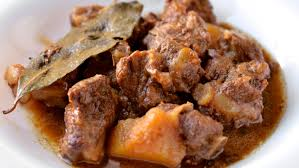
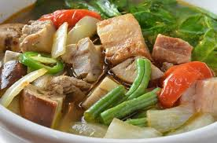
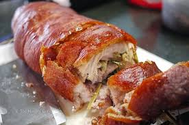
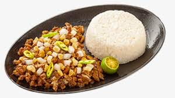
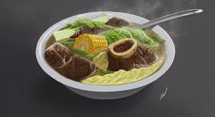

1. Adobo
Adobo can be considered as the most popular dish out of all the Philippines food Just about every Filipino loves adobo, from the call center agent with his packed Tupperware to the socialite lunching at the latest fusion place in Serendra. There are as many versions of adobo as there are households, but all of them share the same basic components.
In English, adobo means “vinegar-braised.” Evenly-cut chunks of meat are first seared in hot fat or oil until they brown. Braising liquids, such as vinegar and soy sauce, are then added, and the mixture is left to simmer over low heat. The moist heat gently penetrates the meat to break down the collagen and tough fibers, resulting in a fork-tender texture with a thick, flavorful sauce. It’s a cooking method that’s time-consuming but undeniably rewarding.
While the cooking process sounds relatively simple, there are still a few details that can trip up a beginner. Remember that tougher cuts of meat need to simmer for a longer time. Tender meats like poultry or seafood should be braised in less liquid, at a lower temperature, and for a shorter period of time or they’ll disintegrate. Keep the temperature low to prevent the outer layers of the meat from toughening up before the insides are cooked thoroughly. Getting a good, even sear on the meat is also crucial to the adobo’s flavor. Lastly, salt should be added (if at all) only towards the end of the cooking process to prevent the reduced sauce from being too salty.

2. Sinigang
Sinigang is a sour Filipino soup consisting of sampalok (fruits of the tamarind tree), water spinach, green pepper, cabbage, broccoli, eggplant, diced tomatoes, sliced onions, ginger, green beans, water, oil, and salt. The basic broth usually consists of rice washing, with the addition of a souring agent.
Ingredients such as pork, fish, milkfish, shrimp, chicken or beef may also be added to the soup. Sinigang is traditionally served hot and steaming as a main dish, with rice as its accompaniment. It is an often seen dish at special occasions such as birthdays or weddings, and over time, as the dish became more popular, there were new variations that used guava or raw mango instead of sampalok and each region developed their own version of the popular soup.
With its sour lightness perfectly matching the harsh tropical heat of the country, sinigang is a unique soup that is a true representative of Filipino cuisine.

3. Lechon
Lechón is a pork dish in several regions of the world, most specifically Spain and its former colonial possessions throughout the world.
The word lechón originated from the Spanish term lechón; that refers to a suckling pig that is roasted. Lechón is a popular food in the Philippines, Cuba, Puerto Rico, Canada, the Dominican Republic, other Spanish-speaking nations in Latin America, and Spain. The dish features a whole roasted pig cooked over charcoal. Additionally, it is a national dish of the Philippines with Cebu being acknowledged by American chef, Anthony Bourdain as having the best pig, and also being the national dish of Puerto Rico.
Nowadays in most of Latin America, the original use of a suckling pig has given way to a medium-sized adult pig. Various livestock or domesticated animals could also be used. In most regions, lechón is prepared throughout the year for any special occasion, during festivals, and the holidays. After seasoning, the pig is cooked by skewering the entire animal, entrails removed, on a large stick and cooking it in a pit filled with charcoal. The pig is placed over the charcoal, and the stick or rod it is attached to is turned in a rotisserie action. The pig is roasted on all sides for several hours until done. The process of cooking and basting usually results in making the pork skin crisp and is a distinctive feature of the dish.

4. Sisig
The distinct, savory aroma wafting from that sizzling plate of sisig might make mouths water, but the recipe behind it could turn the stomach of the more squeamish among us. The first step involves taking a pig’s head and boiling it until it’s tender. The hairs are then removed, with the fleshy portions chopped and then grilled or broiled. Finally, the whole lot is seasoned with salt, pepper, vinegar or calamansi juice before being fried with chopped onions, various types of sili, and chicken livers. Traditionally, sisig is topped with a raw egg which is gently cooked by the sizzling plate’s residual heat. Some eateries occasionally add ox brains, crushed pork cracklings, and even mayonnaise for added richness.
Pork may be the default protein of choice for whipping up sisig, but some adventurous cooks have also used exotic meats like ostrich, frog, and python. Vegetarians and pescetarians (along with practicing Catholics during the Lenten season) can also join in on the fun by going for a plate of squid, tuna, or tofu sisig.

5. Bulalo
Bulalo is a Filipino stew made from beef shanks and marrow bones. Still clinging to the last vestiges of spring and the unusually cool weather we’ve been having, I wanted to break out my pressure cooker for one last hurrah before summer fully sets in. This dish comes from a country where the average temperature rarely falls below 80 degrees, making Bulalo a filling stew that’s deceptively light. Perfect, even in warmer weather.
Native to the Southern Luzon region of the Philippines, Bulalo is a light colored soup that’s made rich by cooking beef shanks and beef marrow bones for hours, until much of the collagen and fat has melted into the clear broth. The seasonings vary from chef to chef with some using only salt and black pepper while other variations call for patis, bay leaves or even garlic. But at its core, Bulalo a simple cattleman’s stew, best made in a large cauldron with whatever veggies are growing near by.
In that respect, it’s actually quite similar to the Mexican beef stew, Caldo de Res, which is not entirely surprising given the 250 years of trade that occurred between the two countries while under Spanish rule.

6. Silog Dishes
“Silog” combines two Filipino foods “sinangag” (garlic fried rice) and “itlog” (egg).
Essentially, silog is a breakfast dish using up last night’s leftover white rice that’s cooked into garlic rice, with a fried egg, a protein of your choice, and a side of sweet pickled papaya called atsara.
The most common silogs are tapsilog, tocilog, longsilog, and bangsilog. The names of each silog come from using the first syllable fo the protein and adding that to the front of the world silog. You can literally silog anything – corned beef silog becomes cornsilog, fried chicken silog becomes chicksilog, and so on.

7. Kare-kare
Kare-kare is a Philippine stew complimented with a thick savory peanut sauce. It is made from a base of stewed oxtail (sometimes this is the only meat used), pork hocks, calves feet, pig feet, beef stew meat, and occasionally offal or tripe. Kare Kare can also be made with seafood (prawns, squid, and mussels) or all vegetables. Vegetables, which include (but are not limited to) eggplant, Chinese cabbage, or other greens, daikon, green beans, and asparagus beans are added — usually equaling or exceeding the amount of meats. The stew is flavored with ground roasted peanuts or peanut butter, onions, and garlic. It is colored with annatto (extracted from annatto seeds in oil or water) and can be thickened with toasted or plain ground rice. Other flavorings may be added, but the dish is usually quite plain, compared to other Filipino dishes. Other seasonings are added at the table. Variants may include goat meat or (rarely) chicken. It is often eaten with bagoong (shrimp paste), sometimes spiced with chili, bagoong guisado (spiced and sautéed shrimp paste), and sprinkled with calamansi juice. Traditionally, any Filipino fiesta (particularly in Pampanga region) is not complete without kare-kare. In some Filipino-American versions of the dish, oxtail is exclusively used as the meat.

8. Halo-halo
Halo-Halo, the Filipino word which means “mix-mix,” is a popular dessert in the Philippines. More than popular, it is THE dessert of the Philippines. Summertime is when the competition gets fierce and every sari-sari store, street-side stand, and fast food chain will offer their own version of the sweet specialty.
Halo-Halo is make from shaved ice, condensed milk, and lots of sweet toppings like jellies, beans, corn, candied fruit, fresh fruit, ube ice cream, and even sometimes pieces of leche flan (Filipino sweet custard).

9. Kinilaw
Kinilaw, also called kilaw (kee-nee-lahw”; “kee-lahw”), is raw, cubed fish in a vinegar-based dressing, usually eaten as an appetizer. It’s also the ever-important “kil” in the term sutukil (“soo-too-kill”), a favorite local pun (“shoot to kill”) and a portmanteau for how Cebuanos traditionally cook: sugba (grilling), tuwa (simmering in broth), and kilaw (eating raw). The closest comparison for kinilaw is ceviche, except ceviche uses citrus fruit like lemons or lime to dress the seafood while kinilaw uses the ubiquitous coconut vinegar, plus garnishes like garlic, onions, ginger, and chiles. Actual connections to South American ceviche are vague, as early accounts of the Spanish explorers and missionaries in the Philippines indicate that the natives were already consuming a lot of fish, some in a style called cquilao (also pronounced “kee-lahw”) that was likely a precursor of this dish. Kinilaw hasn’t changed much over the years, with the best versions relying on good vinegar and fresh raw fish—connoisseurs say it should be “washed,” not soaked, in the vinegar, turning the pink flesh white and just slightly opaque. Fortunately, both of these things are abundant in Cebu, even on its smallest inhabited islands.

10. Balut
A balut is a fertilized bird egg (usually a duck) which is incubated for a period of 14 to 21 days depending on the local culture and then boiled or steamed. The contents are eaten directly from the shell. Balut that is incubated for longer periods have a well-developed embryo and the features of the duckling are recognizable. The partially-developed embryo bones are soft enough to chew and swallow as a whole. The mallard duck (Anas platyrhynchus), also known as the "Pateros duck", is considered to be the most important breed for egg production to make balut.
Balut is common street food in the Philippines and other localities, and is also sold in stores and malls. It is a relatively cheap source of protein and calcium. Balut was introduced to the Philippines by the Chinese in 1565 or around 1885 and since then, balut has been included as a traditional part of the culture. Wherever Filipinos migrated for work, a large market for balut would develop. Controversies arose as knowledge of the food spread around the Southeast Asian countries and then globally. People questioned the ethics of eating balut.
11. Crispy Pata
Crispy pata is one of the most common Filipino dishes served on special occasions. It consists of a whole pork leg that is cooked until tender. It is then dried and deep-fried until golden brown and crispy. The leg is usually cooked alongside various spices such as bay leaves and peppercorns.
It is traditionally rubbed with a spice mixture before it is fried. Served sliced, it is often accompanied by pickled papaya and a tart sauce which combines vinegar, soy sauce, and a variety of spices.
12. Pancit
Pancit is a staple Filipino dish found at numerous feasts and celebrations, consisting of stir-fried noodles with meat and vegetables such as chicken, pork, shrimp, celery, carrots, onions, garlic, and cabbage. The dish has Chinese origins, and the name of the dish is derived from the Hokkien phrase pian i sit, meaning something convenient, cooked fast.
Over time, pancit evolved and became a signature Filipino dish, so today, there are numerous variations of pancit such as pancit canton and pancit bihon. Egg noodles are used for pancit canton, while thin, translucent rice noodles are used for pancit bihon. The dishes are often prepared for birthday celebrations as they symbolize longevity and health according to ancient Filipino superstitions.
13. Pork Barbeque
A merienda (snack in between meals) favourite in the Philippines is Pinoy pork barbecue. While this skewered sweet meat goes wonderfully well with the ubiquitous plain rice during meals, there’s also nothing like catching yourself hungry in the middle of the afternoon and conveniently walking down the street over to the vendors grilling them road-side for only PHP15.
14. Palabok
Vibrantly orange and jam-packed with different textures and flavours, palabok is another well-loved way of cooking pancit. It is mixed in with a shrimp sauce, which gets its recognisable colour from annatto powder. It is finished off with a variety of toppings such as slices of hard-boiled eggs, crushed chicharon (pork rinds), tinapa (smoked fish) flakes, and spring onions.
15. Daing
Daing is a Filipino term which refers to a vast category of marinated or salted sun-dried fish. Depending on the region and the technique, daing can be produced with various types of fish that may differ in texture and moisture levels. Marinated or dried fish is used in numerous Filipino dishes as an ingredient, side dish, topping, or a condiment which gives flavor to various stewed or stir-fried dishes.
Though it originated as a preservation technique, today it is produced in many traditional Filipino households and sold at numerous markets throughout the country.
16. Kaldereta
Kaldereta is a Filipino meat stew that is traditionally served with a side of white rice. Although any kind of meat can be used in the stew, beef and goat are the preferred options. The dish is influenced by three centuries of Spanish colonization, and the word kaldereta is derived from the Spanish caldereta, meaning cooking pot or cauldron.
Besides meat that is used in the dish, other ingredients include mashed liver, tomato sauce, and seasonings such as onions, salt, pepper, and garlic. Kaldereta is often garnished with sliced tomatoes, chopped onions, or fried potatoes on top, and can be found in numerous Filipino turo-turo joints.
17. Sorbetes
Sorbetes is a popular Filipino ice cream flavored with ingredients such as mango, chocolate, cheese, coconut, and purple yam (ube). Traditionally, it is produced from carabao milk and served in tiny scoops on sugar cones. Some Filipinos like to consume it sandwiched between bread buns, like a hamburger.
Although it sounds similar to a sorbet, coming from the Spanish sorbete, it is not a sorbet, but a dirty ice cream, as the locals jokingly call it due to the fact that it is sold along polluted streets. Sorbetes can usually be found at numerous street carts throughout the Philippines.
18. Tinola
The term tinola refers to a vast group of hearty Filipino soups prepared with a flavorful broth infused with garlic, ginger, and fish sauce. Most commonly, the soups are made with chicken, but pork and seafood varieties are also popular.
Tinola soups can incorporate various cuts of meat and seafood ingredients which are usually cooked alongside green papaya or chayote, and chili pepper or malunggay leaves. Not much is known about the history and origin of tinola, but nowadays, they represent an irreplaceable part of traditional Filipino cuisine.
19. Mechado
Mechado is a true Filipino fusion dish that combines chunks of pork or beef with a flavorful tomato sauce. Since tomato sauce is not a common ingredient in traditional Filipino cuisine, it is believed that mechado originated under strong Spanish influence.
Besides meat, it can also incorporate potatoes, bell peppers, carrots, and peas. Mechado is often seasoned with soy sauce or fish sauce. This thick and comforting stew is always served hot, and it is usually accompanied by plain steamed rice on the side.
20. Bicol Express
Bicol express is a popular Filipino dish consisting of sliced pork that is doused in a creamy coconut-based sauce and seasoned with shrimp paste and spicy chili peppers. According to popular belief, Cely Kalaw invented the dish in her Manila restaurant.
She was inspired by the traditional Bicolano coconut-infused dishes and named the new invention after a Filipino train service operating from Manila to the Bicol region. Creamy and spicy Bicol express is usually served with plain steamed rice on the side.